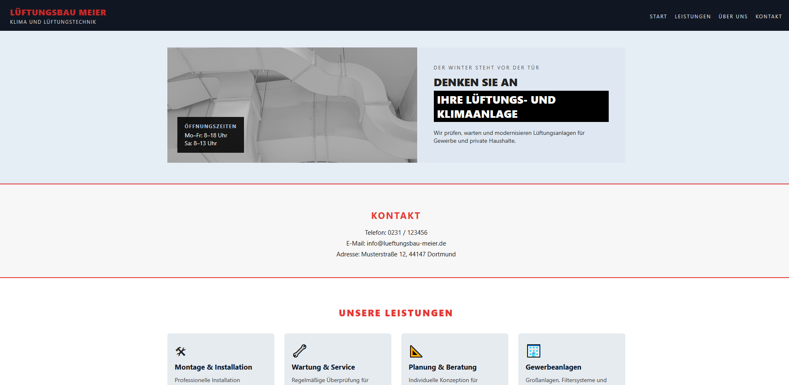
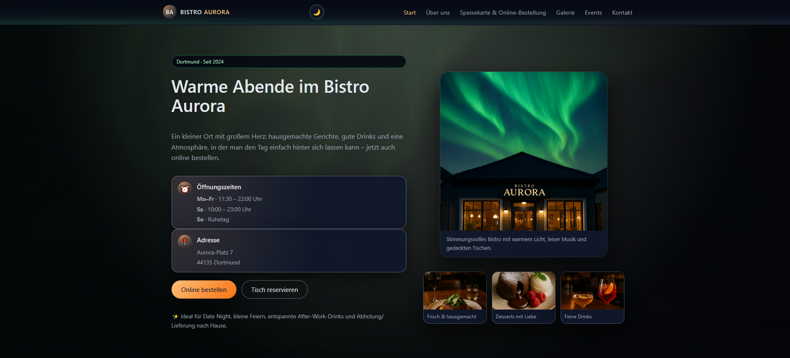

Fertige SaaS-Tools
Sofort einsetzbare digitale Werkzeuge für lokale Unternehmen. Du kaufst, wir deployen, du nutzt. Keine langen Projektphasen, keine Einarbeitung. Aktuell verfügbar: Angebotsrechner für Entrümpelungsbetriebe.
Tools ansehenWebdesign • SaaS-Tools • Digitale Lösungen
Lumencat entwickelt fertige Tools für lokale Unternehmen und baut Websites, die professionell wirken und neue Kunden bringen.
Für Selbstständige, lokale Unternehmen und moderne Marken.
Drei Leistungsbereiche, eine klare Ausrichtung: fertige Tools, individuelle Websites und verlässliche Betreuung. Kein Baukasten, kein Agenturblabla.
Sofort einsetzbare digitale Werkzeuge für lokale Unternehmen. Du kaufst, wir deployen, du nutzt. Keine langen Projektphasen, keine Einarbeitung. Aktuell verfügbar: Angebotsrechner für Entrümpelungsbetriebe.
Tools ansehenProfessionelle Websites, die mobil schnell laden und Vertrauen aufbauen. Individuell entwickelt, klar strukturiert und auf seriösen Auftritt ausgelegt – damit neue Kunden dich finden und direkt Kontakt aufnehmen.
Deine Website bleibt nicht nur online – sie bleibt aktuell. Monatliche Checks, kleine Textänderungen und Statusmeldungen sorgen dafür, dass du dich auf dein Kerngeschäft konzentrieren kannst.
Damit deine Website nicht nur online geht – sondern online bleibt.
Für laufende Lumencat-Projekte.
Die genauen Konditionen findest du in den Paketen & Preisen.
Zu den PaketenFür Websites mit mehr Technik und integrierten Tools.
Details und Preise stehen in den Paketen & Preisen.
Zu den PaketenBeispiele und Demos, die zeigen, wie Lumencat arbeitet. Die Projekte decken verschiedene Branchen ab und geben dir ein Gefühl dafür, wie deine eigene Website oder Lösung aussehen kann.

Seriöse Website für ein Handwerksunternehmen. Klare Struktur, verständliche Leistungen und ein direkter Weg zur Kontaktaufnahme. Ziel ist es, Vertrauen aufzubauen und Anfragen so einfach wie möglich zu machen.
B2B • Mehrseitige Firmenwebsite

Atmosphärische Website für ein Bistro mit starken Bildern und klarer Navigation. Gäste finden Öffnungszeiten, Speisekarte und Kontakt auf einen Blick und können sich schon vor dem Besuch ein Gefühl für den Ort holen.
Gastronomie • Storytelling Website

Website für eine Physiotherapie Praxis mit Fokus auf Vertrauen und Übersicht. Leistungen werden klar erklärt, das Team vorgestellt und Patienten finden schnell alle Infos zu Öffnungszeiten und Kontakt. Ideal für Menschen, die sich vor dem ersten Termin ein Bild von der Praxis machen wollen.
Gesundheit • Praxiswebsite
Lumencat steht für klare, moderne Websites und pragmatische Technik. Kein Hype, sondern Lösungen, die funktionieren, verständlich erklärt sind und deinen Alltag leichter machen.
Im Zentrum steht nicht die Technik, sondern dein Tagesgeschäft. Website und Tools werden so geplant, dass sie zu deiner Branche, deinem Team und deinen Abläufen passen. Ziel ist, dass du weniger erklären, nachfassen und sortieren musst.
Lumencat nutzt moderne Webstandards und fertige Lösungen, wenn sie für dein Unternehmen Sinn ergeben. Viele Bausteine basieren auf bewährten Mustern, werden aber gezielt kombiniert und angepasst. Du bekommst ein System, das dokumentiert ist, nachvollziehbar bleibt und später erweitert werden kann.
Es gibt keine Einheitslösung für alle. Jede Website und jedes Tool wird individuell geplant. Struktur, Inhalte und Funktionen orientieren sich an deinem Unternehmen und deinen Kundinnen und Kunden. So entsteht ein Auftritt, der zu dir passt und langfristig mitwachsen kann.
Von der ersten Nachricht bis zur fertigen Website bleibt der Ablauf klar, transparent und entspannt für dich. Du weißt immer, was der nächste Schritt ist und worum ich mich kümmere.
Wir sprechen über dein Unternehmen, deine Ziele und deine aktuelle Situation. Danach fasse ich zusammen, was du wirklich brauchst und welche Ergebnisse dir am meisten helfen. Auf dieser Basis bekommst du eine klare Empfehlung und auf Wunsch ein passendes Angebot.
Wir legen die Struktur deiner Website fest, planen die Inhalte und klären, welche Funktionen du wirklich brauchst. Navigation, Seitenaufbau und erste Textideen entstehen in dieser Phase. Du siehst früh, wie sich alles anfühlt und kannst ohne Fachbegriffe mitreden.
Ich setze das Design in sauberen Code um, richte dein Kontaktformular ein und deploye bei Bedarf fertige Tools für dein Unternehmen. Du bekommst Zwischenstände zu sehen und kannst Feedback geben, bevor alles final wird.
Wir testen Funktionen, Formular Versand und Darstellung auf Handy und Desktop. Danach geht deine Website an den Start. Auf Wunsch übernehme ich Betreuung und kleine Anpassungen, damit alles aktuell, sicher und erreichbar bleibt. Du bekommst eine kurze Übersicht, wie du Inhalte selbst anpassen kannst.
Direkt einsetzbar. Keine langen Projektphasen. Du kaufst, wir deployen, du nutzt.
Interessenten bekommen auf Smartphone oder Desktop eine Kostenschätzung für ihr Entrümpelungsprojekt. Du bekommst strukturierte Anfragen statt unklarer Anrufe.
Sofort einsetzbar · Einzelinstanz
Tool ansehenAutomatisierte Lead-Erfassung für lokale Dienstleister. Mehr Anfragen, weniger manuelle Arbeit.
Features: Kommt bald.
In Entwicklung
Echte Projekte, echte Ergebnisse – hier siehst du, wie Lumencat anderen Unternehmen geholfen hat.
"Die neue Website ist genau das, was wir brauchten: modern, schnell und übersichtlich. Unsere Anfragen haben sich verdoppelt."
"Der n8n-Bot spart uns täglich Zeit bei Routineaufgaben. Alles läuft automatisch – von Anfrage bis zur Bestätigung."
"Professionelle Beratung und schnelle Umsetzung. Die Website wirkt hochwertig und hebt uns von der Konkurrenz ab."
Lumencat entwickelt Websites und Systeme, die dir Zeit sparen, Anfragen sortieren und deinen Alltag übersichtlicher machen. Wenn du Klarheit statt Fachchinesisch möchtest, lass uns unverbindlich über dein Projekt sprechen.